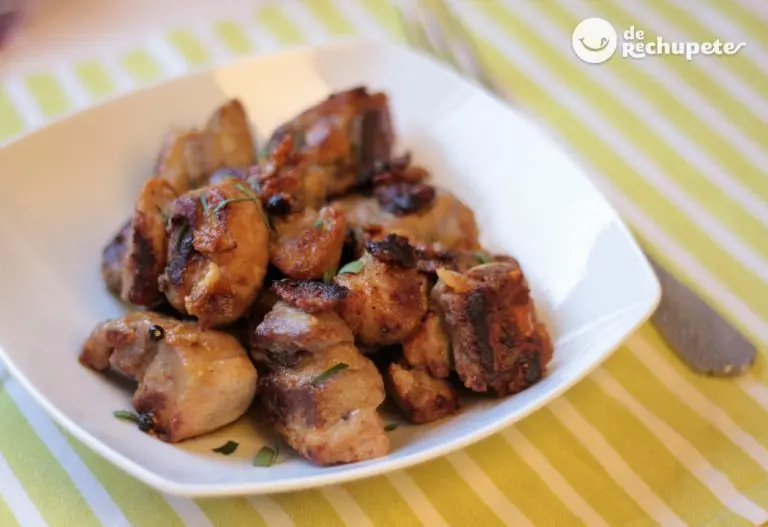
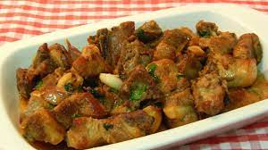
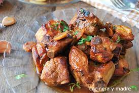

Com fer costelles de porc a l'all. Les receptes amb costella de porc sempre triomfen a casa. És un tipus de tall de carn de porc que solem utilitzar amb freqüència en la nostra cuina i que és molt saborosa.
Trobareu un munt de propostes, des de la clàssica costella guisada amb salsa, a l'estil americà, costelles amb salsa barbacoa o les socorregudes costelles a forn. Una peça de l'porc molt útil per tenir a casa o per a altres usos com un xurrasco com solem preparar a les barbacoes a Galícia, també anomenades churrascadas.
Está en una receta de las de toda la vida, de las que cualquier madre o abuela nos han preparado alguna vez. Su preparación es bastante sencilla y rápida, ideal para novatos en la cocina.
